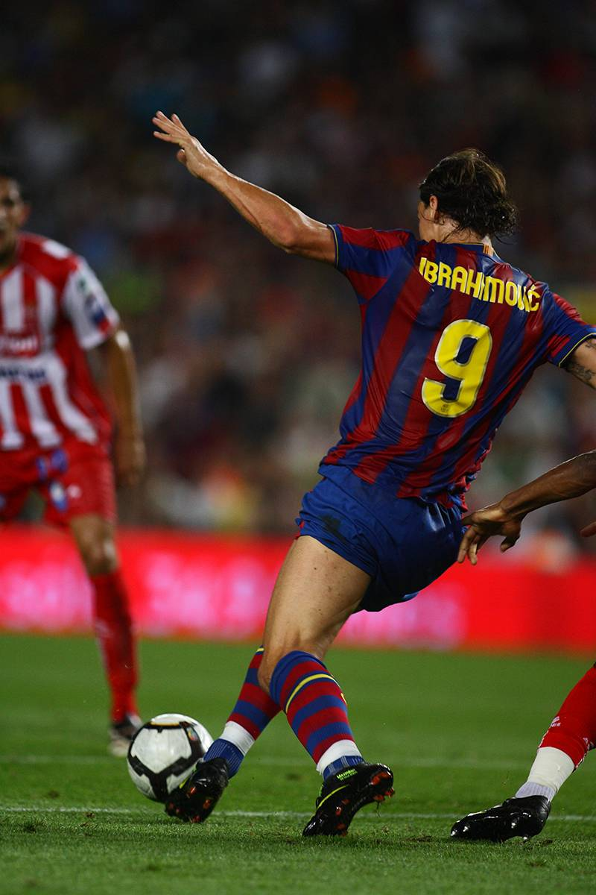
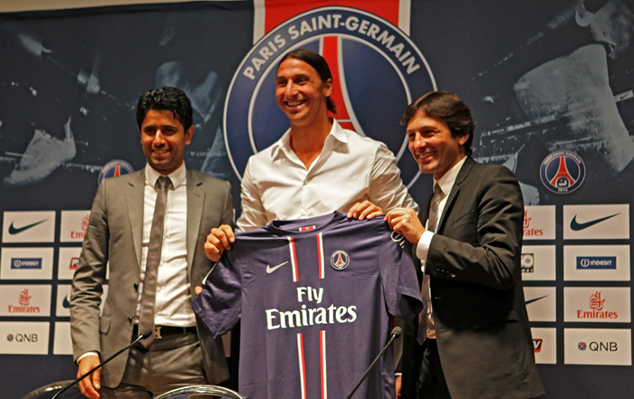
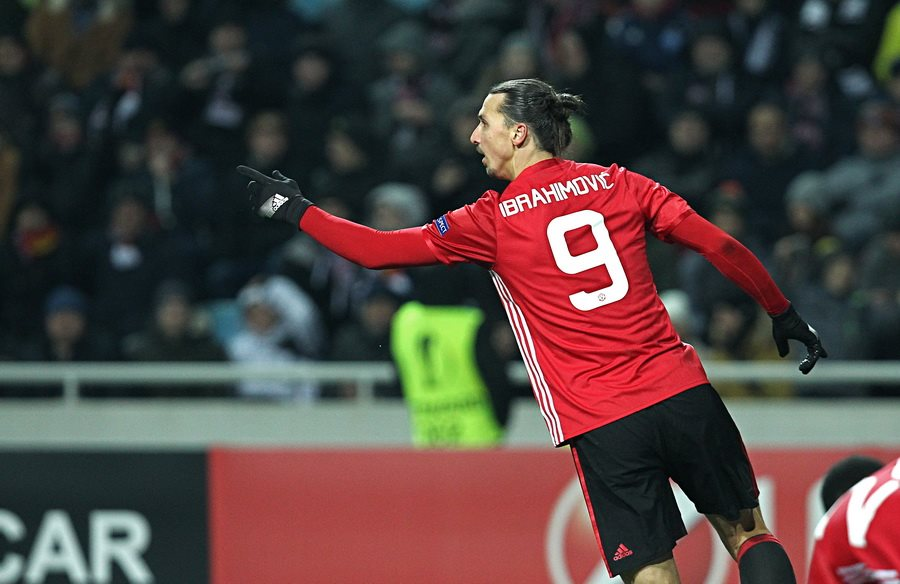

Zlatan Ibrahimovic'
Footballer • Striker
Zlatan Ibrahimović (born 3 October 1981) is a Swedish professional footballer who plays as a striker for Serie A club AC Milan and the Sweden national team. Ibrahimović is renowned for his acrobatic strikes and volleys, powerful long-range shots, and excellent technique and ball control. He is regarded as one of the greatest strikers of all time and is one of the most decorated active footballers in the world,[a] having won 34 trophies in his career. He has scored over 570 career goals, including more than 500 club goals, and has scored in each of the last four decades.
Timeline of Zlatan Ibrahimovic'
• Early Life
- Ibrahimović was born in Malmö, Sweden, on 3 October 1981. He was born to a Muslim Bosniak father, Šefik Ibrahimović, who emigrated to Sweden in 1977,[11] and a Catholic Croat mother, Jurka Gravić, who also emigrated to Sweden where the couple first met.
- As a child, his mother sometimes hit him on the head with a wooden spoon, which would often break. After she was arrested for handling stolen goods, social services intervened. Concerned with his divorced mother's ability to cope with five children, one of whom, Ibrahimović's half-sister, had a drug problem, at age nine he was sent to live with his father.
- Complex is the best word to describe Zlatan. On the one hand he's a strong, warrior type who knew he had to be very tough to survive. So he takes on fights all the time because he's always had to. But another part of him is vulnerable. He's a guy wounded by his upbringing, who uses all that to create strength for himself. In his position, 99 guys out of 100 would have gone under, but he used his anger to make himself better. He told me, ‘David, I need to be angry to play well’. When he played with middle-class kids he felt inferior because he wore the wrong clothes and had no money, so he said to himself ‘One day I’ll show them!’ That became his motivation.
- While in his early teens, Ibrahimović was a regular for his hometown club Malmö FF. At the age of 15, he was close to quitting his football career, in favour of working at the docks in Malmö, but his manager convinced him to continue playing. As a boy, his hero was Brazilian forward Ronaldo. An avid viewer of Italian football, another player he admired was prolific striker Gabriel Batistuta - a player with similar characteristics to himself
• Club Career
- 1999-2001 Malmö FF
- 2001-2004 Ajax
- 20042006 Juventus
-
2006-2009 Inter Milan

Ibrahimović playing for Inter Milan in 2007
-
2009-2011 Barcelona
Ibrahimović playing for Barcelona in a match against Sporting Gijón in 2009
- 2010-2011 → AC Milan (loan)
-
2011-2012 AC Milan

Ibrahimović during a Milan game in December 2011
-
2012-2016 Paris Saint-Germain
Ibrahimović unveiled by Paris Saint-Germain sporting director Leonardo (right) and President Nasser Al-Khelaifi (left)
-
2016-2018 Manchester United
Ibrahimović prior to a Europa League game at Old Trafford in September 2016
-
2018-2019 LA Galaxy

Ibrahimović playing with the LA Galaxy in 2019
-
2020- AC Milan

TIMELINE
• International Career
-
SWEDEN

-
Appearances and goals by national team and year

• Personal Life
- Ibrahimović has one sibling (Sanela) and four half-siblings. His longtime partner is Helena Seger, with whom he has two sons: Maximilian (born 22 September 2006) and Vincent (born 6 March 2008). He used to reside outside Los Angeles when he played for LA Galaxy.
- The name "Zlatan" was trademarked in May 2003 at the Swedish Patent and Registration Office for "most likely being perceived as Zlatan Ibrahimović", meaning he receives exclusive rights to the name for certain products, including sporting goods, clothing, and shoes.
- On 8 October 2019, a statue of Ibrahimović was unveiled in his hometown, outside Malmö's Stadion. The statue, created by Peter Linde, is 2.7 m (8 ft 9 in) tall and weighs almost 500 kg (1,100 lb).
- His surname is tattooed in Arabic on the back of his right arm, the names of his sons Vincent and Maximilian on his right arm. He has the common Buddhist "Five Deva Faces Yantra" representing wind, water, fire, creative perception and space, arranged in a way believed to ward off illness and injury, on his lower back, in addition to a roaring lion.
Find more about Zlatan Ibrahimović on Wikipedia
© Created by Ved Chawda